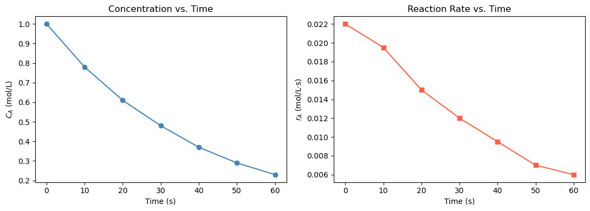
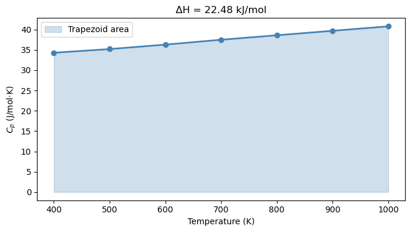
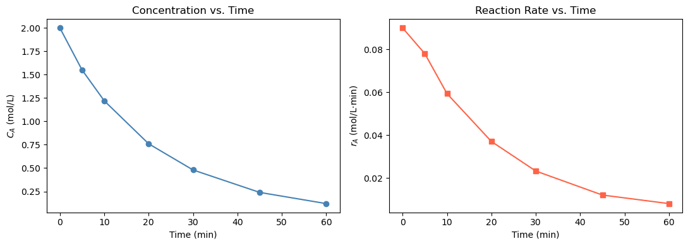
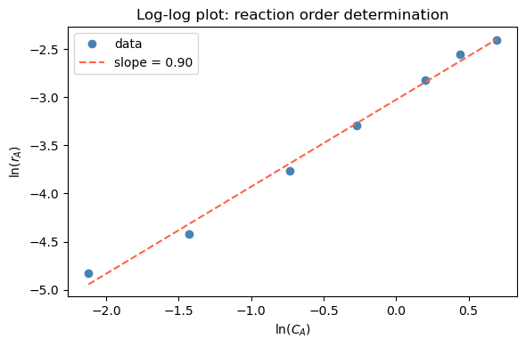
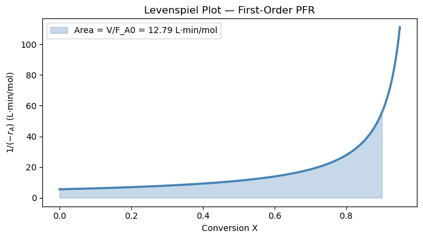

Lab 10: Numerical Differentiation & Integration#
Examples (by instructor)#
In this lab you will practice the numerical tools from Chapter 15:
Task |
Tool |
Key syntax |
|---|---|---|
Derivative of discrete data |
|
|
Integral of discrete data |
|
|
Integral of a Python function |
|
|
Example 1: Reaction Rate from Concentration Data (np.gradient)#
In a batch reactor experiment, species A is consumed over time. We measure \(C_A\) at discrete time points and compute the reaction rate of disappearance:
np.gradient uses central differences at interior points and one-sided differences at the endpoints — automatically handling non-uniform spacing.
import numpy as np
import matplotlib.pyplot as plt
from scipy.integrate import quad, trapezoid, cumulative_trapezoid
t = np.array([0, 10, 20, 30, 40, 50, 60 ]) # s
C_A = np.array([1.00, 0.78, 0.61, 0.48, 0.37, 0.29, 0.23]) # mol/L
# Reaction rate: r_A = -dC_A/dt
r_A = -np.gradient(C_A, t)
# Verification with manual finite differences
dCdt = np.zeros(len(t))
dCdt[0] = (C_A[1] - C_A[0])
dCdt[1:-1] = (C_A[2:] - C_A[:-2]) / (t[2:] - t[:-2])
dCdt[-1] = (C_A[-1] - C_A[-2]) / (t[-1] - t[-2])
r_A_manual = -dCdt
print(f"{'t (s)':>6} {'C_A (mol/L)':>12} {'r_A (mol/L·s)':>14} {'r_A_manual (mol/L·s)':>20}")
print("-" * 58)
for i in range(len(t)):
print(f" {t[i]:>4.0f} {C_A[i]:>12.2f} {r_A[i]:>14.4f} {r_A_manual[i]:>20.4f}")
fig, axes = plt.subplots(1, 2, figsize=(11, 4))
axes[0].plot(t, C_A, 'o-', color='steelblue')
axes[0].set_xlabel('Time (s)'); axes[0].set_ylabel('$C_A$ (mol/L)')
axes[0].set_title('Concentration vs. Time')
axes[1].plot(t, r_A, 's-', color='tomato')
axes[1].set_xlabel('Time (s)'); axes[1].set_ylabel('$r_A$ (mol/L·s)')
axes[1].set_title('Reaction Rate vs. Time')
plt.tight_layout(); plt.show()
t (s) C_A (mol/L) r_A (mol/L·s) r_A_manual (mol/L·s)
----------------------------------------------------------
0 1.00 0.0220 0.2200
10 0.78 0.0195 0.0195
20 0.61 0.0150 0.0150
30 0.48 0.0120 0.0120
40 0.37 0.0095 0.0095
50 0.29 0.0070 0.0070
60 0.23 0.0060 0.0060

Example 2: Heat Required from Tabulated \(C_p\) Data (trapezoid)#
A steam process requires heating from 400 K to 1000 K. Given tabulated heat capacity values, compute the enthalpy change:
trapezoid(y, x) connects adjacent data points with straight lines and sums the trapezoidal areas. Always pass x as the second argument — omitting it assumes unit spacing and gives the wrong answer when your x-axis has physical units.
# Tabulated Cp data for steam (J/mol·K)
T_data = np.array([400, 500, 600, 700, 800, 900, 1000]) # K
Cp_data = np.array([34.3, 35.2, 36.3, 37.5, 38.6, 39.7, 40.8]) # J/mol·K
delta_H = trapezoid(Cp_data, T_data) # J/mol
print(f"ΔH = ∫Cp dT = {delta_H:.1f} J/mol = {delta_H/1000:.3f} kJ/mol")
fig, ax = plt.subplots(figsize=(7, 4))
T_fine = np.linspace(400, 1000, 300)
ax.fill_between(T_data, Cp_data, alpha=0.25, color='steelblue', label='Trapezoid area')
ax.plot(T_data, Cp_data, 'o-', color='steelblue', linewidth=2)
ax.set_xlabel('Temperature (K)'); ax.set_ylabel('$C_p$ (J/mol·K)')
ax.set_title(f'ΔH = {delta_H/1000:.2f} kJ/mol')
ax.legend(); plt.tight_layout(); plt.show()
ΔH = ∫Cp dT = 22485.0 J/mol = 22.485 kJ/mol

Warm-Up: Syntax Practice#
Short exercises to get comfortable with the four tools before the main problems.
Exercise 1 — np.gradient: velocity from position data.
Given position data sampled every 0.5 s:
\(t\) (s) |
0.0 |
0.5 |
1.0 |
1.5 |
2.0 |
2.5 |
3.0 |
|---|---|---|---|---|---|---|---|
\(x\) (m) |
0.0 |
1.4 |
2.5 |
3.3 |
3.8 |
4.0 |
4.0 |
Compute the velocity \(v = dx/dt\) at every point using np.gradient. Print the result and identify which formula (forward / central / backward) was used at each endpoint.
import numpy as np
from scipy.integrate import quad, trapezoid, cumulative_trapezoid
t = np.array([0.0, 0.5, 1.0, 1.5, 2.0, 2.5, 3.0])
x = np.array([0.0, 1.4, 2.5, 3.3, 3.8, 4.0, 4.0])
v = np.gradient(x, t)
print("t (s):", t)
print("v (m/s):", np.round(v, 4))
t (s): [0. 0.5 1. 1.5 2. 2.5 3. ]
v (m/s): [2.8 2.5 1.9 1.3 0.7 0.2 0. ]
Exercise 2 — trapezoid: integrate tabulated flow rate data.
A pump delivers flow at the following measured rates:
\(t\) (min) |
0 |
2 |
5 |
8 |
10 |
13 |
15 |
|---|---|---|---|---|---|---|---|
\(Q\) (L/min) |
0 |
3.1 |
5.8 |
6.4 |
6.0 |
4.2 |
2.0 |
The total volume delivered is \(V = \int_0^{15} Q(t)\,dt\).
Use trapezoid to compute the total volume in liters. Note that the time points are not equally spaced.
t_pump = np.array([0, 2, 5, 8, 10, 13, 15 ]) # min
Q = np.array([0, 3.1, 5.8, 6.4, 6.0, 4.2, 2.0]) # L/min
V_total = trapezoid(Q, t_pump)
print(f"Total volume delivered: {V_total:.2f} L")
Total volume delivered: 68.65 L
Exercise 3 — quad: integrate a Python function.
The NIST Shomate equation gives the heat capacity of N₂ (298–6000 K range) as:
with \(A=26.092\), \(B=8.219\), \(C=-1.976\), \(D=0.159\), \(E=0.044\).
Use quad to compute \(\Delta H = \int_{300}^{1200} C_p(T)\,dT\) in kJ/mol. Print both the result and the error estimate returned by quad.
A, B, C, D, E = 26.092, 8.219, -1.976, 0.159, 0.044
def Cp_N2(T):
t = T / 1000.0
return A + B*t + C*t**2 + D*t**3 + E*t**4 # J/mol·K
dH, err = quad(Cp_N2, 298, 1000)
print(f"ΔH = {dH/1000:.3f} kJ/mol")
print(f"Error estimate: {err:.2e} J/mol")
ΔH = 21.468 kJ/mol
Error estimate: 2.38e-10 J/mol
Practice Problems (by students)#
Problem 1: Batch Reactor — Rate from Concentration Data#
In a batch reactor experiment, species A undergoes a reaction of unknown order. Concentration is measured at the following times:
\(t\) (min) |
0 |
5 |
10 |
20 |
30 |
45 |
60 |
|---|---|---|---|---|---|---|---|
\(C_A\) (mol/L) |
2.00 |
1.55 |
1.22 |
0.76 |
0.48 |
0.24 |
0.12 |
The reaction rate is \(r_A = -dC_A/dt\).
(a) Use np.gradient to compute \(r_A\) at each time point. Print a table of \(t\), \(C_A\), and \(r_A\). Plot \(C_A\) vs. \(t\) and \(r_A\) vs. \(t\) side by side.
import numpy as np
import matplotlib.pyplot as plt
from scipy.integrate import quad, trapezoid, cumulative_trapezoid
t_rxn = np.array([0, 5, 10, 20, 30, 45, 60 ]) # min
C_A = np.array([2.00, 1.55, 1.22, 0.76, 0.48, 0.24, 0.12]) # mol/L
# (a) Compute reaction rate
r_A = - np.gradient(C_A, t_rxn)
print(f"{'t (min)':>8} {'C_A (mol/L)':>12} {'r_A (mol/L·min)':>16}")
print("-" * 42)
for i in range(len(t_rxn)):
print(f" {t_rxn[i]:>6.0f} {C_A[i]:>12.2f} {r_A[i]:>16.4f}")
fig, axes = plt.subplots(1, 2, figsize=(11, 4))
axes[0].plot(t_rxn, C_A, 'o-', color='steelblue')
axes[0].set_xlabel('Time (min)')
axes[0].set_ylabel('$C_A$ (mol/L)')
axes[0].set_title('Concentration vs. Time')
axes[1].plot(t_rxn, r_A, 's-', color='tomato')
axes[1].set_xlabel('Time (min)')
axes[1].set_ylabel('$r_A$ (mol/L·min)')
axes[1].set_title('Reaction Rate vs. Time')
plt.tight_layout()
plt.show()
t (min) C_A (mol/L) r_A (mol/L·min)
------------------------------------------
0 2.00 0.0900
5 1.55 0.0780
10 1.22 0.0593
20 0.76 0.0370
30 0.48 0.0232
45 0.24 0.0120
60 0.12 0.0080

(b) Recompute \(r_A\) using only NumPy array operations — no np.gradient. Use:
a forward difference at the first point: \(\displaystyle\left.\frac{dC_A}{dt}\right|_0 \approx \frac{C_{A,1} - C_{A,0}}{t_1 - t_0}\)
central differences at interior points: \(\displaystyle\left.\frac{dC_A}{dt}\right|_i \approx \frac{C_{A,i+1} - C_{A,i-1}}{t_{i+1} - t_{i-1}}\)
a backward difference at the last point: \(\displaystyle\left.\frac{dC_A}{dt}\right|_{-1} \approx \frac{C_{A,-1} - C_{A,-2}}{t_{-1} - t_{-2}}\)
Print a table of \(t\), \(C_A\), and \(r_A\). Note: the endpoint values will differ slightly from part (a) because np.gradient uses a higher-order one-sided formula at the boundaries.
# (b) Compute r_A using numpy array operations (no np.gradient)
dCdt = np.zeros(len(t_rxn))
# Forward difference at the first point
dCdt[0] = (C_A[1] - C_A[0]) / (t_rxn[1] - t_rxn[0])
# Central differences at interior points
dCdt[1:-1] = (C_A[2:] - C_A[:-2]) / (t_rxn[2:] - t_rxn[:-2])
# Backward difference at the last point
dCdt[-1] = (C_A[-1] - C_A[-2]) / (t_rxn[-1] - t_rxn[-2])
r_A_manual = -dCdt
print(f"{'t (min)':>8} {'C_A (mol/L)':>12} {'r_A (mol/L·min)':>16}")
print("-" * 42)
for i in range(len(t_rxn)):
print(f" {t_rxn[i]:>6.0f} {C_A[i]:>12.2f} {r_A_manual[i]:>16.4f}")
t (min) C_A (mol/L) r_A (mol/L·min)
------------------------------------------
0 2.00 0.0900
5 1.55 0.0780
10 1.22 0.0527
20 0.76 0.0370
30 0.48 0.0208
45 0.24 0.0120
60 0.12 0.0080
(c) To determine the reaction order, plot \(\ln(r_A)\) vs. \(\ln(C_A)\) and determine the correlation between them. Estimate the reaction order \(n\) by calculating the slope.
# (c) Log-log plot to determine reaction order
coeffs = np.polyfit(np.log(C_A), np.log(r_A), 1)
n = coeffs[0]
print(f"Estimated reaction order: n = {n:.2f}")
fig, ax = plt.subplots(figsize=(6, 4))
ax.plot(np.log(C_A), np.log(r_A), 'o', color='steelblue', label='data')
ln_C_fit = np.linspace(np.log(C_A.min()), np.log(C_A.max()), 100)
ax.plot(ln_C_fit, np.polyval(coeffs, ln_C_fit), '--', color='tomato', label=f'slope = {n:.2f}')
ax.set_xlabel('ln($C_A$)')
ax.set_ylabel('ln($r_A$)')
ax.set_title('Log-log plot: reaction order determination')
ax.legend()
plt.tight_layout()
plt.show()
Estimated reaction order: n = 0.90

Problem 2: PFR Design — Levenspiel Integration#
A plug flow reactor processes species A via a first-order liquid-phase reaction:
The design equation is:
The analytical solution for a first-order PFR is \(V = \dfrac{F_{A0}}{k C_{A0}} \ln\!\left(\dfrac{1}{1-X_f}\right)\).
(a) Define levenspiel(X) = \(1/(-r_A(X))\) and use quad to compute \(V\) for \(X_f = 0.90\). Compare to the analytical answer and print the relative error.
import numpy as np
import matplotlib.pyplot as plt
from scipy.integrate import quad, trapezoid, cumulative_trapezoid
k = 0.12 # 1/min
C_A0 = 1.5 # mol/L
F_A0 = 3.0 # mol/min
X_f = 0.90
def rate_1st(X):
return k * C_A0 * (1 - X)
def levenspiel_1st(X):
return 1.0 / rate_1st(X)
# (a) quad integration
integral, err = quad(levenspiel_1st, 0, X_f)
V_quad = F_A0 * integral
# Analytical answer
V_exact = (F_A0 / (k * C_A0)) * np.log(1 / (1 - X_f))
print(f"V (quad): {V_quad:.4f} L")
print(f"V (analytical): {V_exact:.4f} L")
print(f"Relative error: {abs(V_quad - V_exact)/V_exact:.2e}")
X_plot = np.linspace(0, 0.95, 300)
fig, ax = plt.subplots(figsize=(7, 4))
ax.plot(X_plot, levenspiel_1st(X_plot), 'steelblue', linewidth=2.5)
X_shade = np.linspace(0, X_f, 300)
ax.fill_between(X_shade, levenspiel_1st(X_shade), alpha=0.3, color='steelblue',
label=f'Area = V/F_A0 = {V_quad/F_A0:.2f} L·min/mol')
ax.set_xlabel('Conversion X')
ax.set_ylabel('$1 / (-r_A)$ (L·min/mol)')
ax.set_title('Levenspiel Plot — First-Order PFR')
ax.legend()
plt.tight_layout()
plt.show()
V (quad): 38.3764 L
V (analytical): 38.3764 L
Relative error: 2.78e-15
